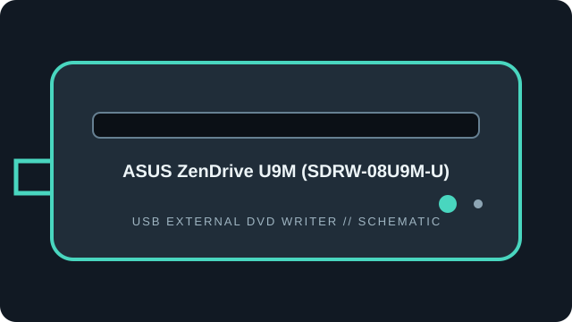

[ EXTERNAL DVD WRITERS // IDENTIFIED MODEL ]
ASUS ZenDrive U9M (SDRW-08U9M-U)
Portable USB 2.0 slim DVD writer with M-DISC DVD+R support; specifications are for the SDRW-08U9M-U, not neighboring ZenDrive variants.

IDENTIFICATION: Match the full model/suffix and any bundled part number against the unit label and cited manual. Rated maximums depend on media, firmware, and operating mode; read support is not write support.
Documented specifications
| Catalog subcategory | External DVD writers |
|---|---|
| Exact model | ASUS ZenDrive U9M (SDRW-08U9M-U) |
| Read media formats | CD-ROM, CD-R/RW; DVD-ROM, DVD±R/RW, DVD±R DL and DVD+R SL M-DISC. |
| Rated read speeds | DVD-ROM/recordable DVD up to 8×; CD-ROM/CD-R up to 24×. The cited ASUS tech-spec page lists write ratings, so read maxima are not represented as equivalent write ratings. |
| Write media formats | CD-R/RW; DVD±R, DVD±RW, DVD±R DL; DVD+R SL M-DISC. |
| Rated write speeds | DVD±R up to 8×; DVD+RW up to 8×; DVD-RW up to 6×; DVD±R DL up to 6×; DVD+R SL M-DISC up to 4×; CD-R/RW up to 24×. |
| USB interface | External slim, USB 2.0; USB-A / USB-C cabling depends on package region. Bus-powered; host port and adapter must supply adequate power. |
| OS / firmware compatibility | ASUS lists Windows and macOS support for this model; use the exact regional support page for OS/software bundle details. Firmware: no revision/update is specified on the cited tech page; keep the unit’s reported revision and use only SDRW-08U9M-U-specific support files. |
| Model distinction | SDRW-08U9M-U is the U9M SKU; do not apply SDRW-08U7M-U or other ZenDrive firmware. |
Use, compatibility & preservation
- External slim, USB 2.0; USB-A / USB-C cabling depends on package region. Bus-powered; host port and adapter must supply adequate power.
- ASUS lists Windows and macOS support for this model; use the exact regional support page for OS/software bundle details. Firmware: no revision/update is specified on the cited tech page; keep the unit’s reported revision and use only SDRW-08U9M-U-specific support files.
- SDRW-08U9M-U is the U9M SKU; do not apply SDRW-08U7M-U or other ZenDrive firmware.
- Record drive model and reported firmware, host OS, USB controller, application version, disc format, media brand and any read or verification errors when imaging.
- Keep checksummed image copies and logs; store discs in cases away from heat, moisture and direct sunlight. Avoid adhesive labels, abrasives and undocumented solvents.
Firmware support is model-specific: do not cross-flash a related product family or infer an update from an adjacent suffix.
Sources
- ASUS ZenDrive U9M SDRW-08U9M-U — Tech SpecsManufacturer speed table for the exact model. The published table is primarily write-speed data.
- ASUS SDRW-08U9M-U support and manualsModel-specific manuals and support resources; confirm the label and regional revision before use.